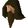

Sigbert the Adventurer

| Config name | sigbert_the_adventurer |
| NPC id | 37 |
| Combat level | hidden |
| Options | Talk-to |
| Wander range | 5 tiles from spawn |
| Area folder | area_yanille |
| Defined in | scripts/areas/area_yanille/configs/yanille.npc |
Sigbert the Adventurer
A bold knight famed for his travels.
Show all 1 spawn on the world map → Open in knowledge graph →
Locations
| Area | Coordinates | Level | Count | Map |
|---|---|---|---|---|
| Wizards' Guild (underground) | 2613, 9506 | 0 | 1 | view |
Dialogue
Sigbert the AdventurerI'd be very careful going down there friend.
PlayerWhy what's down there ?
Sigbert the AdventurerSalarin the twisted. One of Kandarin's most dangerous chaos druids. I tried to take him on, then suddenly felt immensely weak.
Sigbert the AdventurerI hear he's susceptible to attacks from the mind. However I have no idea what that means, so it's not much help to me.
PlayerFear not, I am very strong
Sigbert the AdventurerYou might find you are not so strong shortly...
Referenced in scripts
scripts/areas/area_yanille/scripts/sigbert_the_adventurer.rs2